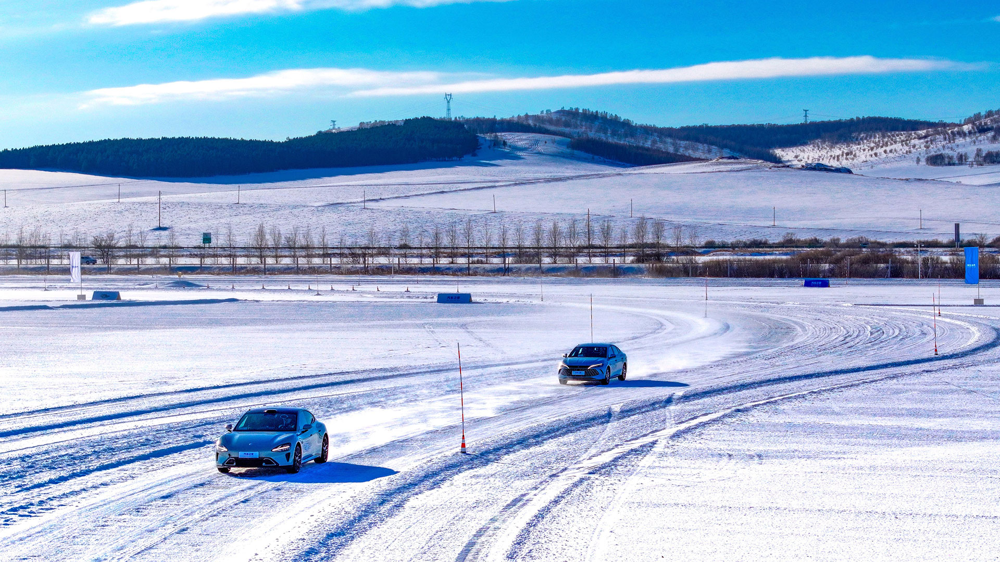
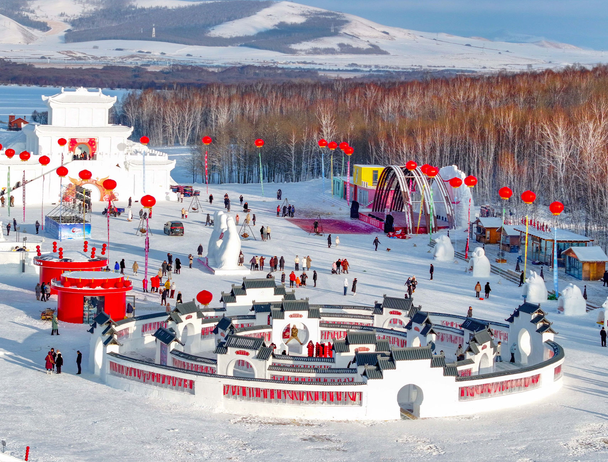
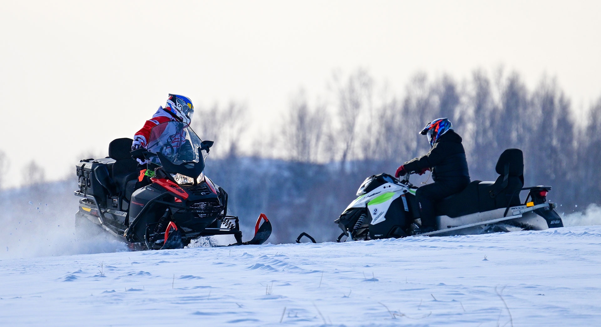

Yakeshi se reinventa más allá del esquí para ofrecer nuevas experiencias invernales
Situada en la Mongolia interior, esta ciudad especializada en las pruebas automovilísticas de invierno ha pasado a convertirse en un centro integral de la industria de hielo y nieve

Los vehículos de nueva energía validan su rendimiento en una base de pruebas de invierno en Yakeshi (Wang Zheng)
Yang Junfeng
27/2/2026
Yakeshi, una ciudad en la región autónoma de Mongolia Interior, está entrando en su temporada alta con la llegada de un nuevo frente frío ártico. En los últimos años, esta ciudad, una de las bases clave de China para las pruebas automovilísticas en invierno, ha experimentado una transformación: de ser un campo de pruebas especializado ha pasado a convertirse en un centro integral de la industria de hielo y nieve, emergiendo como un nuevo modelo de desarrollo económico en ciudades de regiones frías.
La temporada de pruebas invernales de automóviles 2025-2026 comenzó oficialmente en Yakeshi en la mañana del 7 de diciembre de 2025. Con la bandera de señal izada, una flota diversa de vehículos de prueba —que abarcaba desde sedanes eléctricos y SUV de alto rendimiento hasta autos deportivos de lujo— comenzó a recorrer las pistas cubiertas de nieve.
"Aquí las superficies de hielo natural y las temperaturas sostenidamente bajo cero proporcionan condiciones óptimas para validar el rendimiento de los vehículos de nueva energía", explica Ma Zhanyun, ingeniero jefe a cargo de pruebas en altitud, alta temperatura y frío extremo del fabricante automotriz BYD.
Conducir a bajas temperaturas
El ingeniero Ma supervisa a su equipo en el sitio de pruebas de invierno de Hulun Buir del Centro de Tecnología e Investigación Automotriz de China. Su trabajo se dedica a las áreas críticas como la autonomía de conducción a bajas temperaturas y los sistemas de gestión térmica de baterías, con cada conjunto de datos proporcionando información vital para la mejora del producto.
Ubicada en los 49 grados de latitud norte, Yakeshi experimenta una temperatura media invernal de menos 24 grados Celsius, con mínimos extremos que alcanzan los menos 50 grados Celsius. El periodo de congelación dura hasta seis meses, la cobertura de nieve se extiende por casi 200 días al año, y el grosor del hielo alcanza entre dos y cuatro metros.
Este entorno natural ofrece a los vehículos escenarios de prueba completos, incluyendo arranques en frío extremo, resistencia a bajas temperaturas y manejo en superficies cubiertas de hielo y nieve, permitiendo verificar la fiabilidad bajo condiciones extremas sin necesidad de simulación artificial.

Turistas visitan el área escénica de la Montaña Fénix en Yakeshi (Wang Zheng)
El 11 de diciembre de 2025, se firmó y lanzó oficialmente en Yakeshi un proyecto para construir la primera base de pruebas de hielo y nieve durante todas las estaciones de China para vehículos nuevos de energía conectados e inteligentes, con una inversión total de 1.039 millones de yuanes. Se espera que la construcción comience en mayo de 2026 y se complete en 2028.
Una vez finalizado, será la base de pruebas de hielo y nieve durante todas las estaciones para vehículos de nueva energía más grande, completa y tecnológicamente avanzada del mundo. El proyecto incluirá la primera instalación profesional de prueba del país con escenarios de caída de nieve en interiores y el único sitio de prueba de invierno de China para autos voladores, permitiendo pruebas a temperaturas extremadamente bajas de menos 40 grados Celsius durante todo el año.
Mientras las pruebas invernales de automóviles aceleran el crecimiento industrial, el turismo de hielo y nieve de Yakeshi también se está reinventando constantemente.
Turismo de hielo y nieve
"¡Más rápido! ¡Más rápido!" Los vítores resonaron desde la zona de los deslizamientos de nieve en la pintoresca zona de Phoenix Mountain. Un sendero de nieve de más de 100 metros de longitud, que parecía una cinta blanca, serpenteaba por una ladera, con una pendiente de amortiguamiento especialmente diseñada al final que aseguraba tanto emoción como seguridad. "¡Es divertidísimo! ¡Quiero volver a venir!", expresó Duoduo, un pequeño de cinco años que reside en Hangzhou, provincia de Zhejiang.
Yakeshi ha ido más allá de un enfoque único en el esquí para ofrecer una experiencia de turismo de hielo y nieve más rica e inmersiva. En un festival de arte de hielo y nieve recientemente inaugurado, un "árbol de tanghulu" –de más de 10 metros de altura y decorado con más de 10.000 brochetas del tradicional dulce chino de azufaifo– se ha convertido en una atracción popular para los visitantes.
Las casas de hielo construidas con 2.200 metros cúbicos de hielo natural brillaban con claridad cristalina, mientras que actividades como un tobogán de nieve de 500 metros, paseos en motos de nieve y un laberinto de nieve añadían diversión. El invierno pasado, la ciudad recibió a 1,3 millones de turistas, generando un ingreso turístico total de 1,5 mil millones de yuanes.
Las pruebas de invierno y el turismo invernal han fomentado conjuntamente un ecosistema de desarrollo mutuamente reforzador en Yakeshi. La afluencia de ingenieros y personal técnico durante la temporada de pruebas se ha convertido en una fuente estable de visitantes para el turismo de hielo y nieve, mientras que el constante mejoramiento de la gastronomía, el alojamiento y otros servicios de apoyo han proporcionado, a su vez, un respaldo sólido para la industria de pruebas.
Recursos fríos; economía caliente
Los beneficios de esta integración industrial favorecen a los residentes locales. "Antes, el invierno solo significaba quedarse en casa. Ahora, los inviernos en Yakeshi son increíblemente animados", manifestó Wang, gerente de un restaurante en la ciudad. Ella contó al Diario del Pueblo que durante la temporada de pruebas y las temporadas altas de turismo, su restaurante atiende a más de 100 clientes al día, con ingresos más de tres veces superiores a lo habitual. "Esto habría sido inimaginable hace más de una década", asegura Wang.
En las pistas de frío extremo, las ruedas en movimiento impulsan la modernización industrial; a través de los paisajes cubiertos de nieve, la risa y la alegría están liberando el potencial de consumo. Con ingenio y trabajo arduo, esta ciudad del norte de China está convirtiendo los "recursos fríos" en una "economía caliente", escribiendo continuamente su propio capítulo de desarrollo de alta calidad.
OTROS TEMAS
Industria
Isla inteligente en un taller de la empresa conjunta SAIC-GM-Wuling (P. D.)
Fábricas inteligentes exploran nuevos modelos de fabricación en China
Los automóviles ya no tienen que construirse en una línea de ensamblaje tradicional. En China, la producción se organiza cada vez más en torno a lo que se conoce como 'islas de fabricación'
Leer más ->
Algodón

Una cosechadora de algodón en Xinjiang
La tecnología impulsa el desarrollo de la industria algodonera de Xinjiang
En la principal región productora de algodón del país, la producción superó por primera vez los seis millones de toneladas y alcanzó el 92,8 % del total nacional
Leer más ->
Investigación

Montaje de la estructura de la Estación Qinling
Con el equipo chino de la Estación Qinling, en la Antártida
Treinta y dos trabajadores de la construcción permanecen durante el invierno en la quinta estación de investigación de China en este continente
Leer más ->
Ruido

Un parque urbano de Wuhu
Paso firme en el control de la contaminación acústica
Aumenta el porcentaje de áreas urbanas que cumplen con los estándares nacionales de ruido diurno y nocturno, reflejando la 'determinación estratégica' de China en lograr su reducción
Leer más ->

Turistas disfrutan un recorrido en motonieves en una estación de esquí en Yakeshi (Wang Xiaobo)
Créditos
Producción: Edicions Clariana SL | Redacción: People's Daily digital | Diseño: Martí Palma | Maquetación: Enric Abad | Fotografías: People's Daily digital y Getty
Un proyecto de Brandslab. Godó Nexus